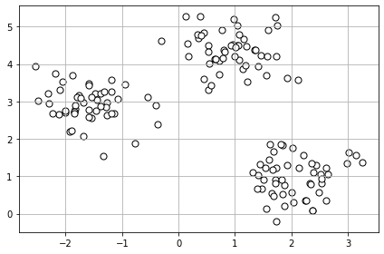
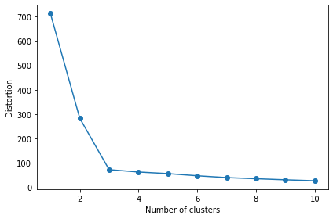
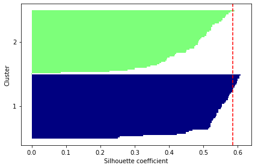
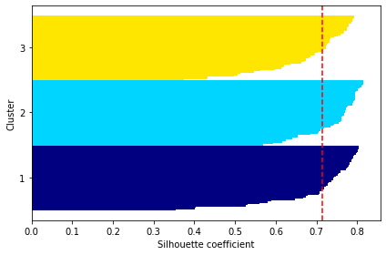

Kmeans決定集群數目方法¶
elbow(轉折判斷法)
Silhouette(輪廓圖分析)
本篇針對這兩種方法進行說明
方法一、轉折判斷法、Elbow¶
設定各種集群數目，執行Kmeans，計算集群內的”誤差平方和”(SSE)
我們可針對一個已分群的資料集，進行Kmeans訓練，並取得誤差平方和，由於不知道分成幾群比較好，所以執行迴圈進行2~10次分群並繪圖，來取得最佳分群數。
步驟一、建立隨機資料集¶
from sklearn.cluster import KMeans
import numpy as np
# 建立隨機資料
from sklearn.datasets import make_blobs
X, y = make_blobs(n_samples=150, # 150個樣本
n_features=2, # 2個特徵
centers=3, # 分3群
cluster_std=0.5, #標準差0.5
shuffle=True, #打亂樣本
random_state=0)
X.shape, y.shape
((150, 2), (150,))
# 繪製資料散佈圖
import matplotlib.pyplot as plt
plt.scatter(X[:, 0], X[:, 1],
c='white', marker='o', edgecolor='black', s=50)
plt.grid()
plt.tight_layout()
#plt.savefig('images/11_01.png', dpi=300)
plt.show()

#查看前5筆
X[:5]
array([[2.60509732, 1.22529553],
[0.5323772 , 3.31338909],
[0.802314 , 4.38196181],
[0.5285368 , 4.49723858],
[2.61858548, 0.35769791]])
步驟二、利用kmeans進行訓練¶
# 訓練模型
from sklearn.cluster import KMeans
km = KMeans(n_clusters=3,
init='random',
n_init=10,
max_iter=300,
tol=1e-04,
random_state=0)
# 取得預測值
y_km = km.fit_predict(X)
# 顯示 Distortion, 群組內的SSE
print('Distortion: %.2f' % km.inertia_)
Distortion: 72.48
步驟三、轉折判斷法¶
# Using the elbow method to find the optimal number of clusters
distortions = [] #儲存誤差平方和的陣列
# 進行迴圈
for i in range(1, 11): #含開始不含結束
km = KMeans(n_clusters=i, #分i群(1~10群)
init='k-means++', #決定起始點
n_init=10,
max_iter=300,
random_state=0)
km.fit(X)
distortions.append(km.inertia_) #儲存誤差平方和
# 畫圖
%matplotlib inline
import matplotlib.pyplot as plt
plt.plot(range(1, 11), distortions, marker='o')
plt.xlabel('Number of clusters')
plt.ylabel('Distortion')
plt.tight_layout()
#plt.savefig('images/11_03.png', dpi=300)
plt.show()

結論: 取3群，效益佳
方法二、輪廓圖分析、Silhouette¶
參考影片:https://www.youtube.com/watch?v=5TPldC_dC0s 官方文件:https://scikit-learn.org/stable/modules/generated/sklearn.metrics.silhouette_score.html
輪廓圖分析(Silhouette Analysis):其目標是決定即群數目，計算輪廓係數，可檢驗樣本在集群中是否緊密在一起。
對樣本點\(x^{(i)}\)，計算其”集群內聚性”\(a^{(i)}\)，即\(a^{(i)}\)對其他樣本之間之平均距離，\(a^{(i)}\)越小越好
對樣本點\(x^{(i)}\)，計算其最相近即群的”集群分離性”\(b^{(i)}\)，即\(b^{(i)}\)對最相近即群中所有樣本之間之平均距離，\(b^{(i)}\)越大越好
計算輪廓silhouette分數，\(s{(i)}\)，其值越大越好，公式如下
\(s^{(i)}=\frac{b^{(i)}-a^{(i)}}{max{(b^{(i)}，a^{(i)})}}\)
步驟一: 進行KMeans演算法，可使用分2群¶
from sklearn.cluster import KMeans
import numpy as np
from matplotlib import cm
from sklearn.metrics import silhouette_samples
from sklearn.datasets import make_blobs
import matplotlib.pyplot as plt
# 執行KMeans演算法
km = KMeans(n_clusters=2, #分成2群
init='k-means++',
n_init=10,
max_iter=300,
tol=1e-04,
random_state=0)
ykm_sil = km.fit_predict(X)
步驟二: 取得每個點silhouette分數¶
cluster_labels = np.unique(ykm_sil)
n_clusters = cluster_labels.shape[0]
silhouette_vals = silhouette_samples(X, ykm_sil, metric='euclidean') #參數為特徵、預測、距離算法(歐幾里得)
silhouette_vals #取得每個點silhouette分數
array([ 0.7882953 , 0.38923407, 0.52211982, 0.55501878, 0.78197122,
0.39231318, 0.36539069, 0.77034967, 0.52076799, 0.37139396,
0.68367198, 0.32525645, 0.54324939, 0.51018379, 0.57910842,
0.53478717, 0.59821967, 0.82440576, 0.55458851, 0.80019991,
0.52561077, 0.79221766, 0.39470861, 0.48367391, 0.52113582,
0.82876127, 0.78946442, 0.27934914, 0.54282261, 0.77181097,
0.60458888, 0.55403934, 0.52145436, 0.58807535, 0.56683775,
0.69138748, 0.72930406, 0.78659885, 0.52301938, 0.47328006,
0.25152598, 0.42241728, 0.56433071, 0.78051492, 0.81226172,
0.80916275, 0.59666707, -0.00119255, 0.52693014, 0.37746722,
0.6691821 , 0.55603136, 0.48540481, 0.81115468, 0.81632036,
0.58519579, 0.44924776, 0.68651592, 0.60858223, 0.42074434,
0.55118637, 0.53010646, 0.57655269, 0.59118001, 0.4505824 ,
0.46840856, 0.49088486, 0.62495534, 0.59049654, 0.54580185,
0.2258517 , 0.72125536, 0.81401509, 0.53290402, 0.75485587,
0.51701736, 0.34529882, 0.44822225, 0.59887566, 0.50387171,
0.80984972, 0.7934094 , 0.47284556, 0.4591054 , 0.756137 ,
0.69230847, 0.81031794, 0.5842746 , 0.58104124, 0.7715848 ,
0.80455398, 0.47712047, 0.71639904, 0.52209993, 0.80988821,
0.08423803, 0.5384104 , 0.57219866, 0.75436112, 0.70430335,
0.78613036, 0.8133511 , 0.57201777, 0.82195085, 0.77536398,
0.48800374, 0.58609946, 0.29979014, 0.50926768, 0.56232908,
0.59984998, 0.50827116, 0.82078455, 0.57274759, 0.48469894,
0.52336326, 0.49407708, 0.33482475, 0.56025757, 0.56413022,
0.5260028 , 0.79641254, 0.55167084, 0.57298119, 0.65251923,
0.79439846, 0.51762099, 0.79199223, 0.5362064 , 0.55157585,
0.56560082, 0.57466232, 0.74927365, 0.52378749, 0.60410015,
0.25690452, 0.41595449, 0.54339201, 0.72752468, 0.53739559,
0.41669133, 0.40135894, 0.71174552, 0.82733491, 0.59772762,
0.5132418 , 0.59243308, 0.45677801, 0.80462721, 0.73746698])
步驟三: 繪圖並取得整體分數¶
# 繪圖
y_ax_lower, y_ax_upper = 0, 0
yticks = []
for i, c in enumerate(cluster_labels):
c_silhouette_vals = silhouette_vals[y_km == c]
c_silhouette_vals.sort()
y_ax_upper += len(c_silhouette_vals)
color = cm.jet(float(i) / n_clusters)
plt.barh(range(y_ax_lower, y_ax_upper), c_silhouette_vals, height=1.0,
edgecolor='none', color=color)
yticks.append((y_ax_lower + y_ax_upper) / 2.)
y_ax_lower += len(c_silhouette_vals)
silhouette_avg = np.mean(silhouette_vals)
# 畫輪廓值(silhouette)平均數的垂直線
plt.axvline(silhouette_avg, color="red", linestyle="--")
plt.yticks(yticks, cluster_labels + 1)
plt.ylabel('Cluster')
plt.xlabel('Silhouette coefficient')
plt.tight_layout()
#plt.savefig('silhouette.png', dpi=300)
plt.show()

輪廓圖解說:

由圖可知該數據分成兩群是不佳的，可考慮將藍色群體再分成兩群
# 整體分數
from sklearn.metrics import silhouette_score
silhouette_score(X, y)
0.7143417887288687
我們往往當下無法知道應該分成幾群，可以使用迴圈，由兩群開始分，到十群，再看整體分數
for i in range(2, 11): #含起始不含結束
km = KMeans(n_clusters=i,
init='k-means++',
n_init=10,
max_iter=300,
random_state=0)
km.fit(X)
y_km = km.fit_predict(X)
#print(y_km)
#distortions.append(silhouette_score(X, y_km))
print(f'{i}, silhouette_score: %.2f' % silhouette_score(X, y_km))
2, silhouette_score: 0.58
3, silhouette_score: 0.71
4, silhouette_score: 0.58
5, silhouette_score: 0.45
6, silhouette_score: 0.30
7, silhouette_score: 0.33
8, silhouette_score: 0.33
9, silhouette_score: 0.34
10, silhouette_score: 0.35
結論: 分成3群分數最高，所以分三群最好。
步驟四: 分成3群後，繪圖看看。¶
km = KMeans(n_clusters=3,
init='k-means++',
n_init=10,
max_iter=300,
tol=1e-04,
random_state=0)
y_km = km.fit_predict(X)
cluster_labels = np.unique(y_km)
n_clusters = cluster_labels.shape[0]
silhouette_vals = silhouette_samples(X, y_km, metric='euclidean') #參數為特徵、預測、距離算法(歐幾里得)
silhouette_vals
y_ax_lower, y_ax_upper = 0, 0
yticks = []
for i, c in enumerate(cluster_labels):
c_silhouette_vals = silhouette_vals[y_km == c]
c_silhouette_vals.sort()
y_ax_upper += len(c_silhouette_vals)
color = cm.jet(float(i) / n_clusters)
plt.barh(range(y_ax_lower, y_ax_upper), c_silhouette_vals, height=1.0,
edgecolor='none', color=color)
yticks.append((y_ax_lower + y_ax_upper) / 2.)
y_ax_lower += len(c_silhouette_vals)
silhouette_avg = np.mean(silhouette_vals)
# 畫輪廓值(silhouette)平均數的垂直線
plt.axvline(silhouette_avg, color="red", linestyle="--")
plt.yticks(yticks, cluster_labels + 1)
plt.ylabel('Cluster')
plt.xlabel('Silhouette coefficient')
plt.tight_layout()
#plt.savefig('silhouette.png', dpi=300)
plt.show()
